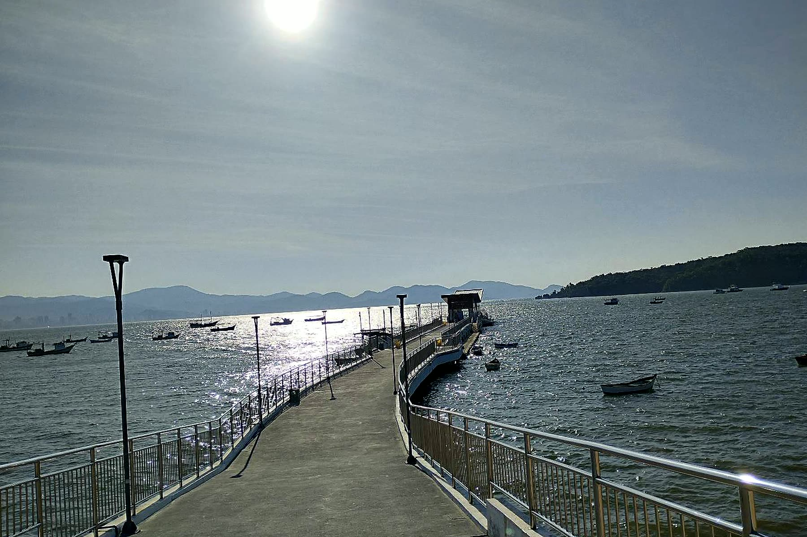

Tempo estimado de travessia de lanchaOperando hoje · Trapiche Nova Brasília
Trecho selecionadoPontal do Sul ↔ Nova Brasília
Tempo de navegação12 a 15 min
Saída direta sem aguardar lotação de barca, desembarcando no trapiche de Nova Brasília ou Fortaleza.

Cooperativa Náutica · Nova Brasília
Navegação segura com o Táxi Náutico Luiza e Analy.
Com base em Nova Brasília na Ilha do Mel, operamos a embarcação Luiza e Analy IV levando passageiros, famílias e bagagens com rapidez, coletes homologados e marinheiros nativos da baía.
Saídas no horário que você combina pelo WhatsApp
Desembarque próximo à sua pousada (Brasília, Fortaleza ou Encantadas)
Passeios privativos para ver os botos na Baía dos Golfinhos
Qual a vantagem do Táxi Náutico para a barca comum?
No Táxi Náutico Luiza e Analy você não enfrenta fila de espera e sai no horário combinado, indo direto para Nova Brasília, Praia da Fortaleza ou Encantadas em metade do tempo.
Vocês buscam em Pontal do Sul e Paranaguá?
Sim! Fazemos tanto o embarque nos trapiches da Ilha do Mel quanto buscas agendadas no continente (Pontal do Sul e Paranaguá).
Posso levar malas e equipamentos de praia?
Sim, nossa lancha tem espaço seguro e protegido para transportar suas malas, pranchas e compras até o trapiche mais próximo da sua pousada.
Ilha do Mel Sem Fila
Sua lancha pronta no trapiche quando você precisar.